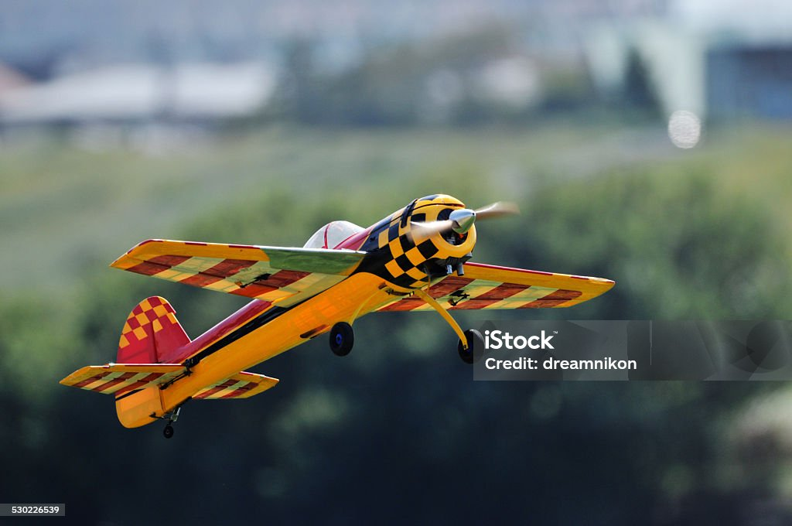
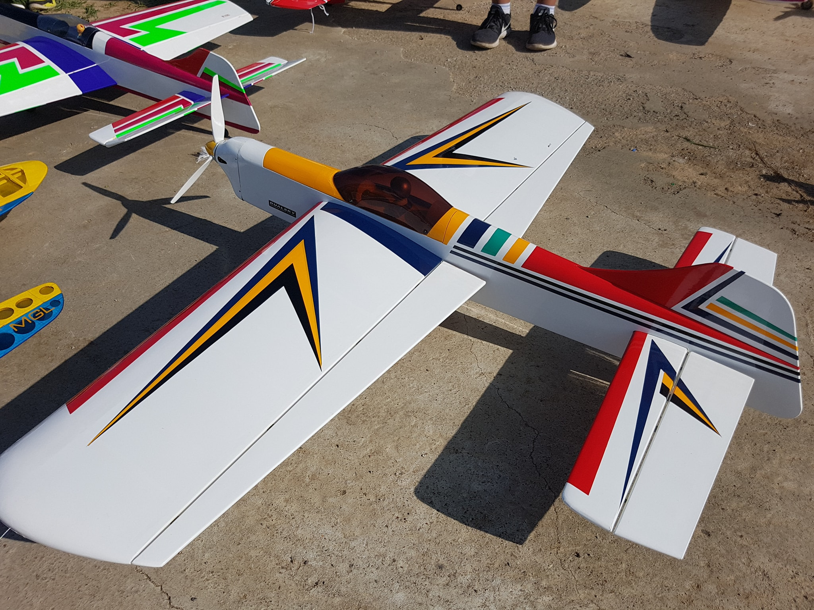
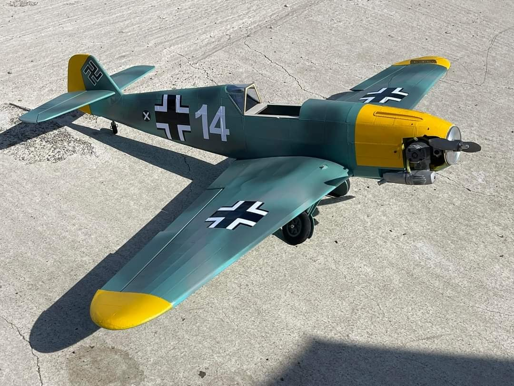
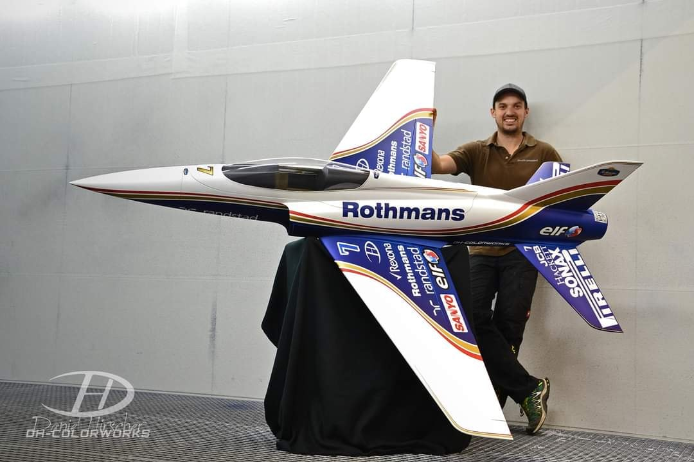
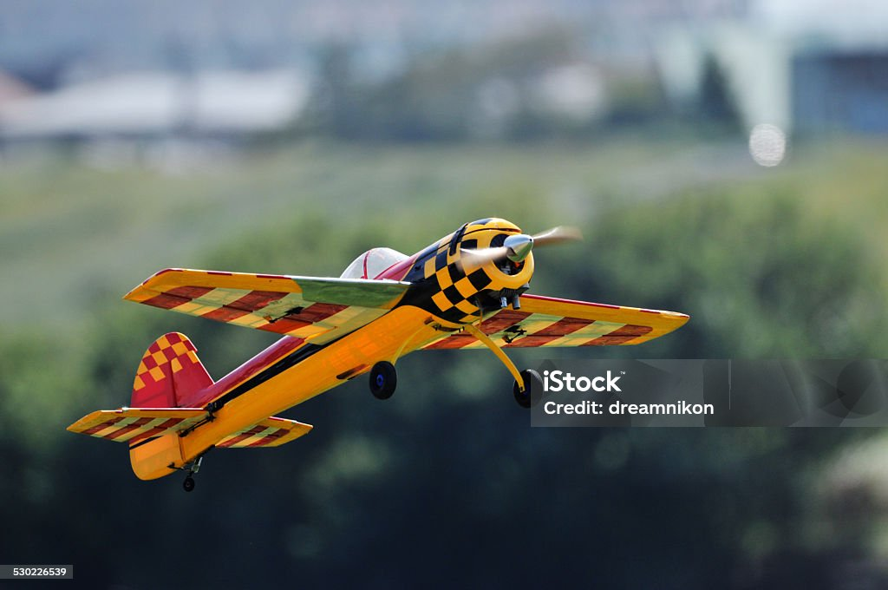
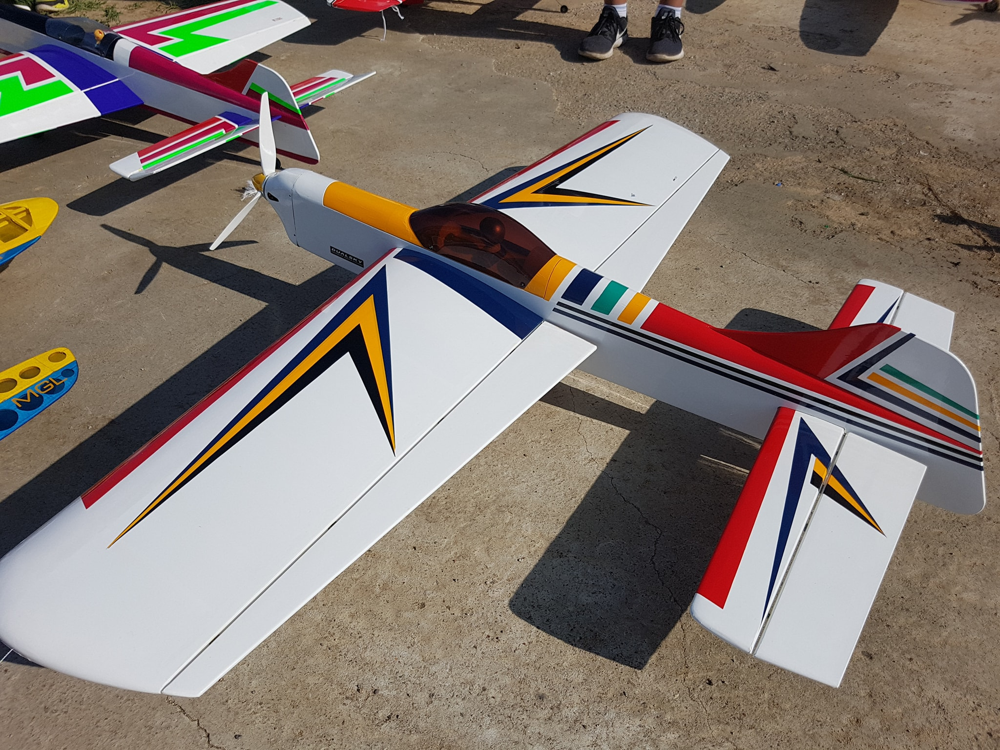
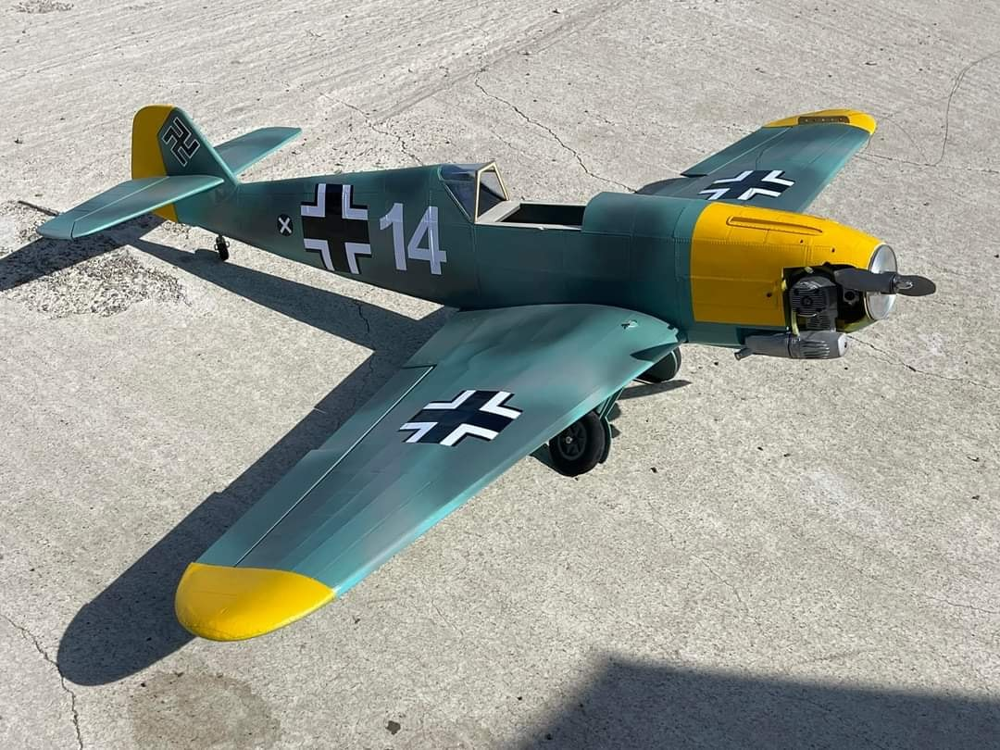
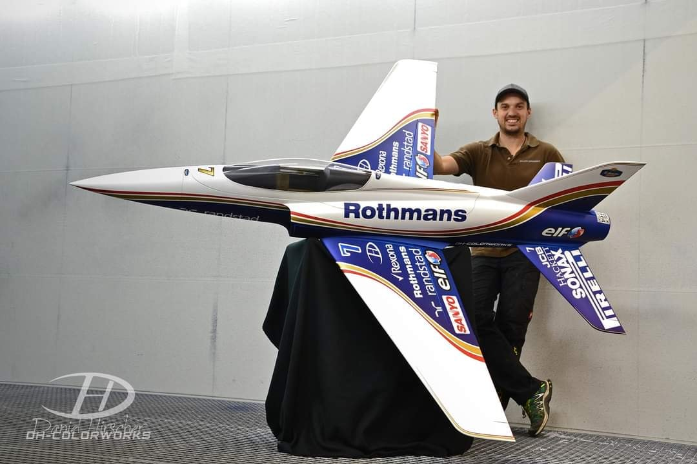

AN ENGINEERING SPORT-aeromodelling
What is an aeromodelling?
Aeromodelling is the activity involving design, development and flying of small air vehicles. It is a very exciting and interesting way to learn, apply and understand science and engineering principles. While designing an aeromodel is highly based on engineering principles, flying part of Aeromodelling is also considered to be an expensive hobby/ sport.
- Is aeromodelling a sport?
- What is the purpose of aeromodelling?
- How is aerodynamics used in sports?
Aeromodelling encompasses the design, building and flying of model aircraft, in all their various forms. Once viewed as just a hobby, aeromodelling has become one of the largest and most popular air sports in the world.
“It is a hobby in which a cadet learns to build up the model of actual aircrafts which are unable to carry persons and used for sports purposes”. The aim of introducing Aeromodelling in the NBB curriculum is to increase the air-mindness in the youth of our country.
Aerodynamics plays a prominent role in defining the flight of a ball that is struck or thrown through the air in almost all ball sports. The main interest is in the fact that the ball can often deviate from its initial straight path, resulting in a curved, or sometimes an unpredictable, flight path.
Aero modelling sport has been around since man first started to put his dreams of air flight into practice. Also known as model aircraft competitions, participants compete with fully functional miniature aircraft that are self-designed and built and controlled by remote. The objective of competitions is to finish a course as fast as possible or achieve maximum flight time, which sometimes involves flying the aircraft for several hours. Aeromodelling generally involves small sized flying objects like Radio Controlled Aircraft (RC Aircraft), Gliders, Ornithopters, Boomerangs and Paper Planes. Although Aeromodelling looks like a lot of Aerospace/ Aeronautical engineering topic, it involves a lot of interdisciplinary concepts from various streams of engineering - primarily aerospace/ Aeronautical, Mechanical, Electronics, Electrical and Computer Science. Aeromodelling gives a good understanding of the roles each of these engineering skills play in real aircraft industry and provides enormous opportunities to develop innovative thinking and implementation.

 






